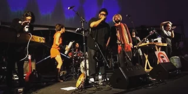

Destaques da programação
Circomuns
Circo Teatro Palomar
circo espetaculo
20/02 a 20/02 • Campo Limpo
Histórias para Ouvir
com Kelly Orasi e pessoas convidadas de Jundiaí
literatura
diversas sessões | 20/02 • Jundiaí

Show Baião de Spokens
Lançamento 'Status Quântico/EPiko', com participação especial de BNegão
musica show Publico em geral
20/02 a 20/02 • Itaquera
Raio-que-o-parta: ficções do moderno no Brasil
Curadoria: Aldrin Figueiredo, Clarissa Diniz, Divino Sobral, Marcelo Campos, Paula Ramos e Raphael Fonseca. Consultoria: Fernanda Pitta. Coo…
artes visuais exposição
16/02 a 07/08 • 24 de Maio

Paula Lima
Show "Saudade"
musica show
19/02 a 20/02 • Vila Mariana
Amazônia – Sebastião Salgado
Curadoria: Lélia Wanick Salgado
artes visuais exposição
15/02 a 10/07 • Pompeia